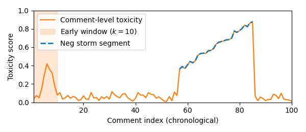

TV coverage of the early-warning framework for toxic social media storms, developed with Rutgers University.
Newswise
UAlbany, Rutgers researchers develop early-warning model to predict toxic social media storms
National Today
Researchers develop early-warning system for toxic social media interactions
Mirage News
UAlbany-Rutgers create toxic social media alert
TechXplore
Early toxic social media storms
Scienmag
Researchers from UAlbany and Rutgers create early warning system to forecast toxic social media storms
Rutgers SC&I News
New study unveils early-warning framework to predict surges in online abuse
EurekAlert!
Press release on the early-warning framework
MSN
New technology at UAlbany aims to prevent cyberbullying